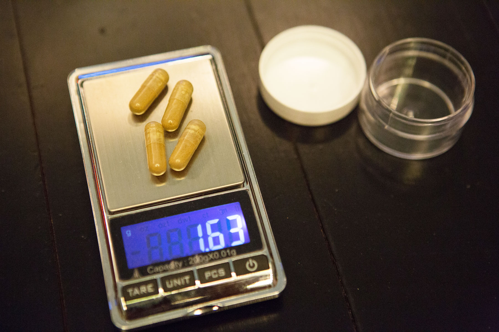

A swarm of locusts fills your vision. Thunderclouds cover the bedroom ceiling. Sweats drips from your forehead, chest and hands. You have trouble breathing. The walls around you bend and twist. You cover your eyes, but the scenes play out with the same realer-than-real intensity. An audience somewhere is clapping. The windows of your bedroom disappear into blackness, and 100 stamp-size televisions appear, each one reprising a moment of your childhood: the exact lyrics of a song on the radio you heard once when you were two years old, or the color of your socks at a kindergarten birthday party, or the timbre of your grandfather's voice. This scene bleeds into a darker one of demons and daggers and devil armies. You want to get away, but you cannot. You cannot wake up-you cannot move your body. You are Shea Prueger, and you are stuck here for 48 hours.
"It's not the sort of thing anyone would ever want to repeat," Prueger says.
Prueger speaks while swinging in a hanging wicker garden chair at a house in Costa Rica, about 30 miles west of the capital city of San José. The 27-year-old used to live in Manhattan, work as a model and shoot up heroin. Today she is recalling a desperate attempt five years ago to break her opiate addiction with a psychoactive drug called ibogaine.
She had tried methadone, Suboxone, Narcotics Anonymous and other treatments. Nothing worked. So for two days in 2011 she lay on a mattress in a concrete-walled room in an underground clinic in Guatemala, unable to move, nauseated, while her mind plumbed the deeper recesses of hell. She stayed clean for nine months, relapsed once in June 2012 and says she has not used any narcotics since. “Ibogaine,” she insists, “did for me what no other recovery treatment could do.”
Recovered addicts, along with a handful of scientists, argue that a dose of ibogaine, a substance derived from a rain-forest shrub called Tabernanthe iboga, can “reset” the addiction centers of the brain, freeing them from cravings. In the past decade an estimated 10,000 people worldwide, mostly long-term drug addicts, have turned to ibogaine. Thousands of addicts and recreational users are flocking to clinics primarily located in Mexico and Central America, where the drug is easily obtainable and legal. In 2006 there were 13 ibogaine clinics operating worldwide; today there are at least 37. Clinic operators claim that one dose can curb addictive behavior, as well as depression, in about 70 percent of patients.
That success rate, if real, would make ibogaine a sorely needed remedy for an exploding problem. In the U.S., most research indicates that heroin addiction has doubled since 2007, reaching upward of one million addicts today. The increase in needle use, sadly, has also triggered a new surge in HIV infections. Overall, seven million people in the country have some kind of drug abuse problem. Many seek help but do so in vain. Ninety percent of heroin users will relapse after counseling. Eighty percent will relapse if they stop taking methadone, the most common opiate replacement therapy. Even if addicts stay on methadone, 40 percent will relapse.
Ibogaine proponents say it does a better job because it works on many neural pathways at the same time, not just one, which other treatments do. The multipronged attack eliminates several types of cravings, says Deborah Mash, a professor of neurology and pharmacology at the University of Miami who has been studying ibogaine for more than 20 years. Addiction gradually inhibits the movement of signals along these pathways, she says, and ibogaine’s broad hit essentially cleans out all the pipes at once. Buoyed by these ideas, two companies, one with partial funding from the National Institute on Drug Abuse, are currently developing medications based on ibogaine.
The drug does have a catch: it can kill its users. During the initial hallucinatory phase of treatment, patients often suffer from cardiac arrhythmia, which can lead to cardiac arrest and sometimes death. Use is illegal in the U.S., where the substance has the most restrictive designation possible from the Drug Enforcement Administration. Published medical reports tie ibogaine to 19 fatalities in 3,500 treatments between 1990 and 2008. Because informal clinics such as the one in Guatemala may not track all adverse events, the Royal College of Psychiatrists in the U.K. estimates that the fatality rate may be even higher, reaching one in every 300 treatments. Animal studies suggest that the substance, when it does not kill, produces lasting brain damage. “Do we need ibogaine? Not if it there is a toxic part,” says Herbert Kleber, a psychiatrist at Columbia University Medical Center.
Desperate addicts, failed by methadone, counseling and other treatments, are undeterred by these warnings. Many of them see ibogaine—and all its heart-stopping, brain-degenerating risks—as their last, best chance to get healthy.
A Long, Strange Trip
Ibogaine did not make its pharmaceutical debut as an addiction treatment. In small amounts of around eight milligrams, it works as a stimulant. From 1939 to 1970 a French pharmaceutical company mass-produced a tablet form of the drug named Lambarène as a cure for depression, lethargy and infectious diseases. The stimulant properties made ibogaine popular enough among athletes for the International Olympic Committee to ban its use in the 1960s.
Around that time the late Howard Lotsof, then a 19-year-old heroin addict, took some ibogaine for its hallucinogenic effects and told other addicts the drug also reduced his heroin cravings. Word spread, and addicts began using larger doses, anywhere from three to 20 milligrams per kilogram (mg/kg) of body weight, to help kick their habits. Some of the first scientific studies came out in the late 1980s, which used animal models, and they suggested ibogaine did curb withdrawal symptoms. The overseas clinics began to open.
Prueger has become evangelical about the substance. After feeling ibogaine’s curative powers in 2011, she began administering the drug to other addicts. Prueger now directs Envision Recovery, a long-running and popular ibogaine clinic. Every week Prueger and Envision founder Lex Kogan host up to half a dozen patients suffering from addictions to alcohol, opiates, amphetamines and prescription drugs in an eight-room ranch-style house propped on a steep cliff in a suburban Costa Rican neighborhood. Neither Kogan nor Prueger has any formal medical education or psychiatric experience.
In late December 2014 Bryan Mallek, then a gaunt and frail-looking 29-year-old from West Palm Beach, Fla., showed up asking for help. Mallek has been using heroin for the past 15 years and methadone for about six months. He had tried to get sober dozens of times already. “Nothing else has worked,” he told me in a soft and quivering voice. When I interviewed Mallek, he was 10 days into an 18-day treatment protocol, sitting on a worn leather sofa in the clinic’s meeting room. An IV line was tied to his right arm, feeding him an electrolyte solution to keep his body hydrated while he fasted on fruit and water in preparation for his first dose. “[Ibogaine] works on the neurochemistry on the brain—that’s why I know it will work,” he said. “This isn’t, you know, talk therapy."
The next day Mallek lay on the sheets of a queen-size bed. He had not taken any opiates for 12 hours and had just entered the first stages of withdrawal—sweats and chills. During the previous two days, a nurse specializing in cardiac care had administered an electrocardiogram to monitor Mallek’s heart, especially the rhythms of muscle movements. After a patient ingests ibogaine, his or her heart rate slows to about 20 percent of its normal resting rate, one of the reasons the drug is considered to be so dangerous. Carefully monitoring heart health will help spot arrhythmias in case treatment is needed. After testing, the nurse declared that Mallek’s heart and vital signs were healthy. He was ready to begin treatment. Prueger approached with a single gel cap filled with 200 milligrams of ibogaine, a white, powdery substance Envision purchases direct from Slater & Frith Ltd, a British pharmaceutical company that extracts the drug from raw T. iboga in Padua, Italy. Mallek swallowed the pill, relaxed his head on the pillow, closed his eyes and prepared for two days of hallucinations. “I’m here and ready,” he said, his voice quivering. “I want to go now
Envision has treated more than 1,000 addicts in the 15 years since Kogan started the operation. Patients there initially get several small doses to look for problems such as arrhythmias. This is followed by a high dose administered over a two-day period, this one intended to produce addiction-curbing effects. Kogan and Prueger have charted patient progress through voluntary phone calls and e-mails over months and even years, and they say that this regimen can cure 75 percent of the people who come to them.
A few new studies by outside researchers support these types of claims. In November 2014 research led by neuroscientist Eduardo Schenberg of the Federal University of São Paulo in Brazil looked back at the histories of 75 addicts a year after they took a flood dose of ibogaine. (Schenberg conducted phone interviews and corroborated data with doctors who saw patients during periodic checkups.) He learned that 61 percent remained drug-free for five and a half months after a single treatment. That percentage is favorable compared with that of addicts who stop taking methadone: only 20 percent of them do not relapse. Schenberg’s study found addicts who received multiple ibogaine treatments remained off drugs for even longer: a median period of 8.4 months.
In March 2015 Thomas Kingsley Brown, a neuroscientist and principal investigator at the Multidisciplinary Association for Psychedelic Studies, a California-based nonprofit research organization, published results of a study that followed 30 chronic drug users for a year after receiving ibogaine therapy at two clinics in Mexico. Brown and his colleagues called patients every month and gave them a questionnaire called the Addiction Severity Index, which measures progress in several problem areas commonly related to addiction, such as psychiatric and social well-being. Nineteen patients made it halfway through the study before dropping out; 10 patients completed all 12 months. The preliminary data showed that all patients benefited from what Brown calls a “huge reduction in withdrawal symptoms The 10 who completed the year had significant improvements in social well-being. The study, presented at the 2013 MAPS Psychedelic Science Conference in Oakland, Calif., did not follow them further, so Brown does not know how many, if any, relapsed into drug use.
Despite Mallek’s disparaging remark about “talk therapy,” Brown thinks ibogaine cannot work well without it. Counseling helps patients identify addiction causes such as emotional trauma or physical pain, and ibogaine interrupts physical cravings and stems withdrawal symptoms. This double effect can, according to Brown, “greatly strengthen people’s resolve to live sober, honest lives again Death and Damage
No addicts will lead a decent life, of course, if ibogaine kills them. The heart risks have been well documented. There is also the potential of harm to the brain. In the 1990s several animal studies at Johns Hopkins University showed severe brain lesions and degeneration of cerebellar Purkinje cells, large neurons that control aspects of motor function, in rats given doses of about 100 mg/kg of ibogaine ( equivalent to a human dose of about 16 mg/kg). Further, in 1996 an Environmental Protection Agency study showed an enormous increase (up to 215 percent) in glial fibrillary acidic protein (GFAP), which can weaken the structure of brain and spinal cord cells, in rats given 100 mg/kg of the drug.
The extent of damage in Purkinje cells and the potential for damage from GFAP spikes was directly tied to dosage. When researchers administered doses of 40 mg/kg (about 6.5 mg/kg in humans) of ibogaine to opioid-addicted rats, there was no observable Purkinje cell degeneration. Addicted rats dosed at 75 mg/kg (12 mg/kg in humans) showed no GFAP spikes indicative of potential damage. Both 40 and 75 mg/kg doses significantly decreased the withdrawal symptoms of the addicted rats. Some rats were dosed at smaller 10 and 25 mg/kg levels more than a dozen times in a month with no observed evidence of neurotoxicity.
In people, smaller doses (as little as 4.5 mg/kg) have proved to be fatal to one confirmed patient. Ibogaine’s restrictive Schedule I status and lack of funding sources have made it nearly impossible for researchers to run clinical toxicology studies on humans to learn why.
In 1993 Mash did get U.S. Food and Drug Administration approval to begin a safety study of ibogaine in cocaine-dependent volunteers. The initial results were positive: the beginning dose of 1 and 2 mg/kg hurt no one. But when Mash sought funding from nida to conduct research on higher doses and to begin a larger study, which included investigating safety, measuring the time it took patients to metabolize the drug and determining whether any genes in the patients affected those outcomes, Nida refused, claiming that ibogaine was simply too unpredictable for human trials.
“It’s a pharmacologist’s nightmare,” says Frank Vocci, former chief of drug abuse research at the fda, who oversaw ibogaine studies at nida in the 1990s. One of the primary issues with the drug, Vocci argues, is that it was very hard for researchers to gauge a predictable dose across a population. “We surveyed the [existing] studies and found something like two deaths for 100 people who had taken ibogaine,” Vocci says. “You can’t run a program with those kinds of risks. The safety data are just so bad Mash, however, thought her early results meant she was onto something, despite nida’s misgivings. With funding from private investors and patients themselves, she continued drug metabolism, safety and efficacy research on more than 300 chronic users at a clinic on the Caribbean island of Saint Kitts between 1996 and 2004. Using follow-up data on patients after treatment, Mash reported that ibogaine detox blocked at least 90 percent of the opiate withdrawal symptoms in chronic heroin and methadone users. More than half of the patients stayed clean a year after the treatment, according to self-reports and family interviews. Mash filed her data to the fda and to New Zealand’s government health agency, which does allow ibogaine treatment.
Mash used this work to develop a theory about how ibogaine works in the brain and what—she believes—makes the drug so powerful. From a molecular perspective, all life’s euphoric moments—joy, gratification and arousal—are the result of dopamine, serotonin and other chemicals, called neurotransmitters, signaling across billions of nerve cells in the reward centers of the brain. The more of these neurotransmitters that are active in the brain’s reward areas, the better we feel. When a strong opioid such as heroin is introduced into the body, it triggers a release of dopamine and other neurotransmitters into these reward centers, creating the drug’s “high.” If a person continues taking heroin, the brain will become accustomed to the constant presence of the drug, and the neural networks in the reward centers will adapt. If a person stops, the body and brain begin to crave the chemicals that are no longer there—and the results are withdrawal cravings. Ibogaine works, Mash says, because it does not simply substitute for heroin on one of these neural pathways, as, say, methadone does. It blocks several paths—including the opioid, serotonin, glutamate and acetylcholine systems—that interact to pass along craving signals to other parts of the brain.
But without money for research, Mash has not been able to verify or elaborate on this preliminary work. “The bottom line is without funding from the National Institutes of Health or a pharma sponsor, you don’t go forward,” she says.

Detox the Drug
For Stanley Glick, ibogaine’s costs and benefits would balance much more easily with fewer side effects. Glick, director of the Center for Neuropharmacology & Neuroscience at Albany Medical Center, first heard about the drug’s potential and its dangers in the 1990s. He and Canadian chemist Martin E. Kuehne began trying to distill the active agents out of ibogaine while leaving all its toxic components behind. In 1996 Glick and Kuehne developed a synthetic analogue of ibogaine named 18-methoxycoronaridine, or 18-MC. Research in the 1990s with laboratory animals showed that 18-MC effectively blocked the alpha-3 and beta-4 nicotinic receptors in the brain, which are believed to play a significant role in addiction, without affecting the serotonergic system. Researchers believe the serotonergic system is largely responsible for ibogaine’s hallucinations. “It puts a chilling effect on anything that raises the level of dopamine too high,” Glick says—everything from heroin to alcohol to food.
For the past decade Glick has led several studies on both ibogaine and 18-MC’s efficacy in curbing addictions in rodents and humans. After a false start in 1999 trying to bring 18-MC to market, he joined Savant HWP, a privately held drug development company based in northern California, in 2009. In September 2014 Savant HWP received more than $6.5 million from Nida to conduct human trials of 18-MC. Results of a double-blind, placebo-controlled study conducted by Savant HWP’s partner company in Brazil in 2014 showed all volunteers given therapeutic dosages of 18-MC suffered no adverse effects of the drug—hallucinations, cardiac reaction, Purkinje cell damage or any other neurotoxicity. Savant HWP began running clinical trials of 18-MC on chronic addicts in the U.S. last year.
Mash is not far behind. Inspired by the results of her eight years of ibogaine trials on Saint Kitts, Mash helped to found DemeRx, a private drug–development research company working to bring noribogaine, another ibogaine-derived drug, to market. In October 2014 a New Zealand team of researchers completed a phase I study of noribogaine on 36 healthy, drug-free male volunteers. The volunteers received various therapeutic oral doses of noribogaine or a matching placebo and were then monitored over the course of 216 hours. The scientists said there were no adverse effects from either the placebo or noribogaine. Early research suggests that noribogaine, like 18-MC, may also share ibogaine’s ability to stem withdrawals and curb addictions but without the side effects.
Unpublished DemeRx preclinical toxicology studies have so far demonstrated that noribogaine does not cause cerebellar Purkinje cell degeneration, cerebellar tremors or GFAP activation with two-week chronic exposures. The company has filed an Investigational New Drug application in the U.S. for noribogaine, and proof-of-concept studies for the drug are currently under way.
The patient pool that drives Glick and Mash forward are not just drug addicts but people with a much more common disease: clinical depression. Today one in 10 American takes an antidepressant medication; among women in their 40s and 50s, that figure increases to one in four. Mood-enhancing pharmaceutical drugs such as fluoxetine, more commonly known by its trade name Prozac, work as selective serotonin reuptake inhibitors (SSRIs), blocking the reabsorption of serotonin by a neuron. Serotonin is a neurotransmitter that plays a role in sending messages in the brain; an increase in serotonin results in increased brain activity, which appears to boost the mood of patients with depression. But Prozac and other SSRIs are not always effective. According to a 2010 study in the Journal of the American Medical Association, placebos had the same effect as SSRIs in most people suffering from moderate or mild depression. A National Institute of Mental Health–funded study from 2006 found that about 70 percent of people who took SSRIs experienced the same depressive symptoms after 14 weeks. For those with major depression, about 35 percent did not respond to SSRIs or any other antidepressant therapy. A number of depressed patients, failed by these drugs, turn to ibogaine to normalize their presumed chemical imbalance.
Clinic administrators such as Kogan boast that a single dose of ibogaine can help reset that healthy balance of dopamine, serotonin and other chemicals in depression sufferers much the same way it works in the brains of chronic drug addicts. There is no scientific support for Kogan’s claims, but that has not stopped depression sufferers from flocking to Envision Recovery. Kogan reports that about 80 percent of patients suffering from depression who come to the clinic will permanently cease taking SSRIs and leave happy and healthy after treatment. Envision claims a 300 percent increase in SSRI users from just three years ago; these patients now constitute 30 percent of all clinic customers. Kogan predicts those numbers will double in the coming years. And Glick thinks that a nontoxic ibogaine analogue will be an important addition to the antidepressant arsenal.
Demand and Supply
At Envision, four days after Mallek received his big ibogaine dose, he was rushing to pack his bags before taking a bus to Costa Rica’s western coast for a sightseeing tour. “I’m going to go see some monkeys, sit on a beach, whatever!” he said. His face was flush, and he was chatty and energetic. “I have no cravings, no withdrawals,” Mallek said, flashing a smile. “People try to quit so many different ways, and they all fail. But this works for everybody. This stuff’s a miracle.”
In fact, ibogaine does not work for everybody. It did not even work for Mallek this time. He was clean for four months, and then he relapsed. Patients like him, and the concerns about harm caused by the drug, are reasons that—until there are placebo-controlled, randomized, double-blinded clinical trials in multiple centers—ibogaine will remain on the outliers of addiction therapy, relegated to unregulated, unsupervised clinics run by do-it-yourself administrators. And none of this rigorous research is on the horizon, because safety concerns make it unlikely that government institutions in the U.S. or Europe will allocate funds for it. Private pharmaceutical companies have shown little interest in the drug because of this same danger and because it is not easily patentable.
Still, the large number of addicts looking to cleanse their demons means that ibogaine is not going to disappear anytime soon. Mallek, for instance, did not blame the drug for his relapse but instead faulted his own weakness. “I don’t want to say that ibogaine gives people their lives back, more so that it gives people the ability to take their lives back,” he wrote to me in an e-mail. “But freedom without wisdom can be a dangerous thing.” Mallek also thought he had acquired some wisdom, at least about his personal flaws. He was planning a return trip to Envision for a follow-up treatment. He was determined to get clean, no matter the risks.